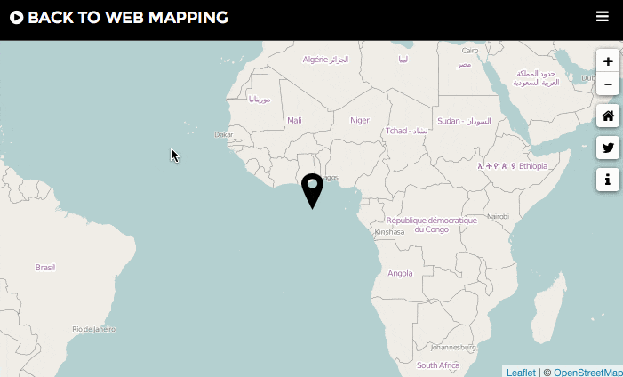

Landsat 8 Before / After
Fast and Easy landsat 8 scenes comparison
Following recent projects, I'm glad to introduce another one based on Landsat 8 data.
Landsat 8 Before/After is a new tool which aim to ease before/after map creation using landsat 8 images (landsatlook images).
As for Landsat 8 Evolution the first idea was to devellop a new (and simple) User Interface to visualize earth changes througt landsatlook images. "Before/After" images comparisons are used everywhere, so I thought there might be some nice ones for maps but I had only two (leaflet compatibles) choices: jQuery Before/After Map Plugin from Metro Trends or leaflet-beforeafter by mivdnber.
I had a preference for the jquery lib because of the style (it was before finding a nice workout on github LeafletSliderTemplate). The original jquery solution wasn't really responsive so I had to rewrite some of the code (jquery.beforeafter-map-1.01.js)
This project might be the last one using landsatlook jpegs... I'm bored by low resolution images :-)
- Date: June 2015
- Category: Landsat 8 / OpenData